Simon Fraser University — Mobile Application Design
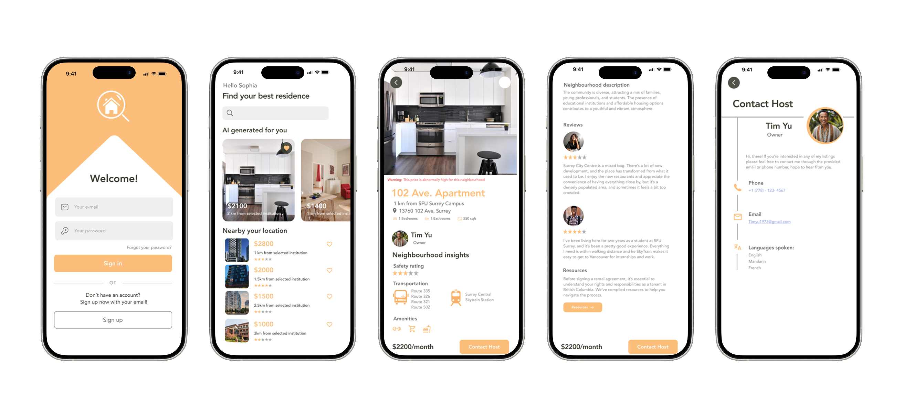
User research revealed a consistent pain point among international students arriving in Canada: finding reasonable, affordable housing is one of the biggest obstacles they face. Without local knowledge, reliable resources, or familiarity with the market, the process is overwhelming before it even begins.
HomeScope was designed to change that. Built around the specific needs of international students, the app simplifies the housing search from the ground up — offering a smoother transition and a more secure path to finding a home.
HomeScope keeps user needs at the centre of every design decision. While other housing platforms offer basic listings, HomeScope delivers an experience tailored to the unique challenges international students face — combining transparency, safety, and genuine support into a single, intuitive tool.
The user flow was mapped early to ensure the path from onboarding through to finding and contacting a host was as direct as possible. New users complete a personal information form and set their housing preferences before landing on their personalized recommendations page.
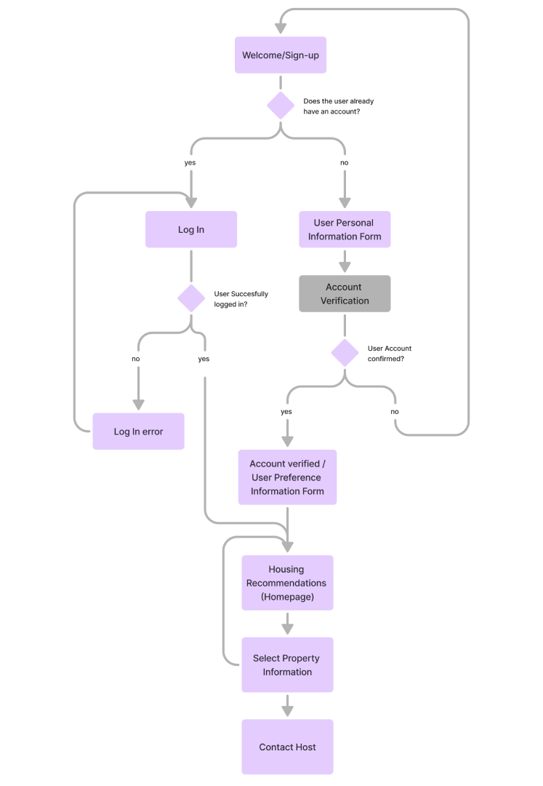
Hand-drawn wireframes were used to explore the core screens early in the process — mapping layouts for sign-in, profile setup, listings, search, listing details, favourites, and the renter resources page before moving into high-fidelity design.
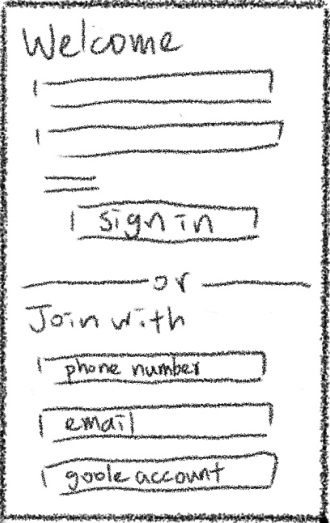
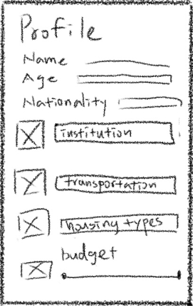
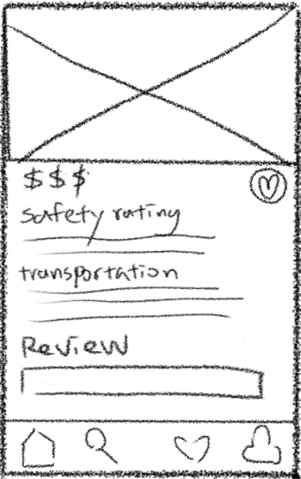
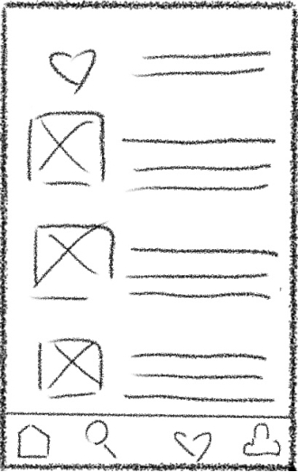
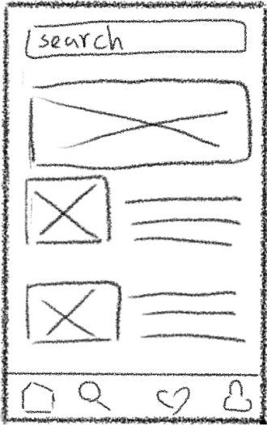
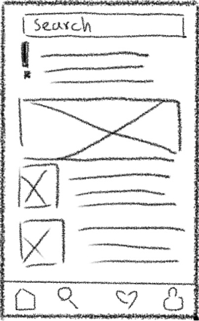
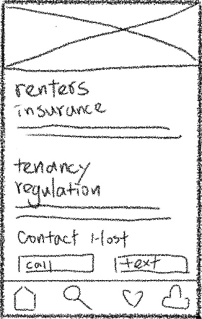
Before moving into prototyping, a design system was established in Figma — defining the colour palette, typography, and component styles that carry through the entire app. The warm orange accent, clean sans-serif type, and consistent card layouts work together to create an experience that feels approachable and trustworthy for international students navigating an unfamiliar housing market.
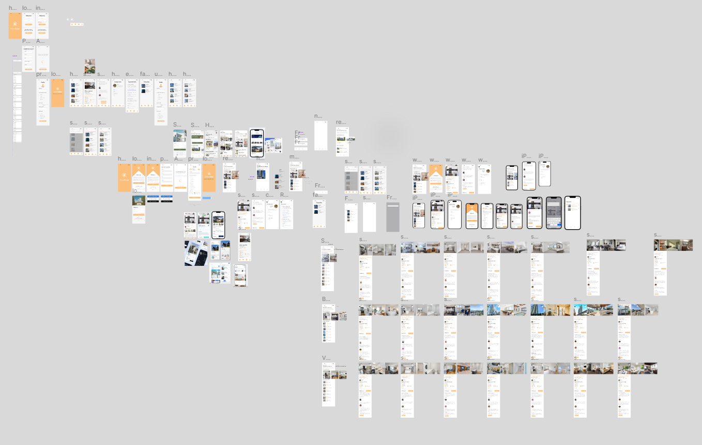
The welcome screen offers a clean sign-in flow with multiple entry points — email, phone number, or Google account — keeping the barrier to entry low for students arriving from any background.
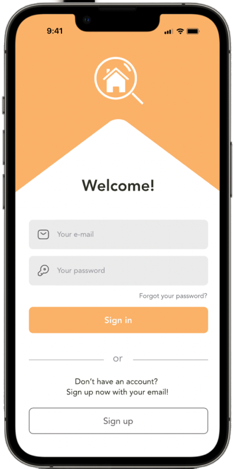
The profile setup captures the details that matter: institution, transportation preference, housing type, and budget. This input feeds directly into the AI recommendation engine, ensuring the results shown are genuinely relevant to each user's situation — not just a generic list.
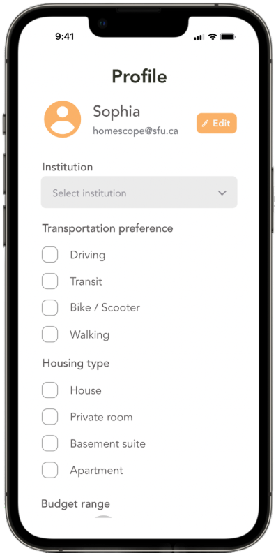
The homepage delivers a personalized list of housing recommendations generated from the user's profile preferences. Listings are sorted by proximity to the user's institution, from most to least expensive, with the best-matched options surfaced first. A refresh button allows users to regenerate results if the AI needs recalibrating.
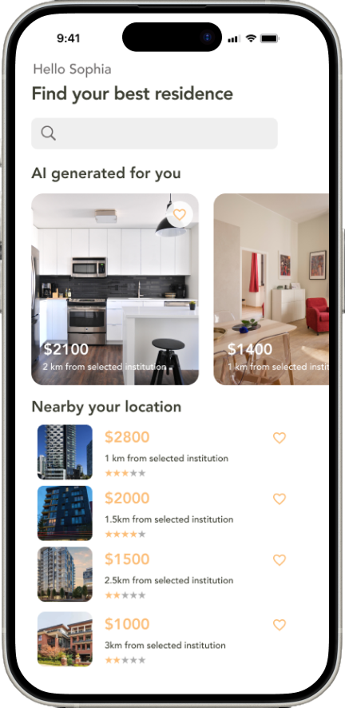
For users who want to explore beyond their AI-generated results, the search function opens the full listings catalogue. A clear inline warning reminds users that results outside their preferences may not match their criteria — keeping them informed without blocking exploration.
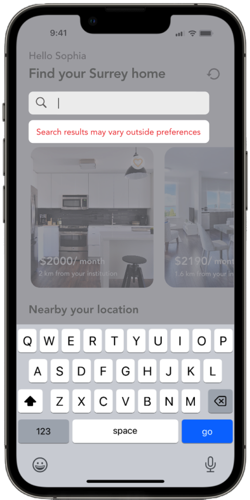
Tapping a listing reveals far more than just the price and address. Users see a safety rating, nearby transit routes, amenity icons, and a neighbourhood description — everything needed to understand the actual living experience of a property before committing to a viewing.
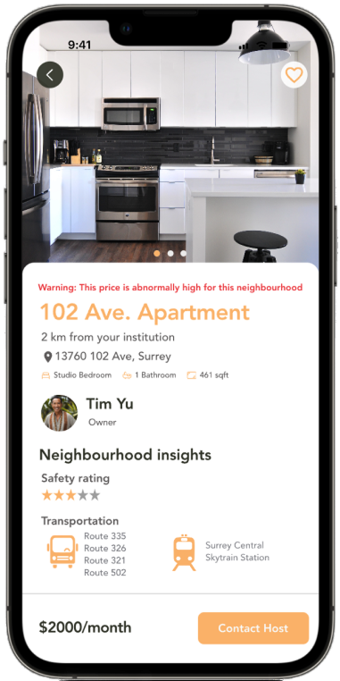
Peer reviews from other students provide authentic, ground-level perspectives on what it's actually like to live in an area. Below reviews, a dedicated Resources section links to BC-specific tenancy information — arming users with the knowledge they need to navigate the rental process safely and confidently.
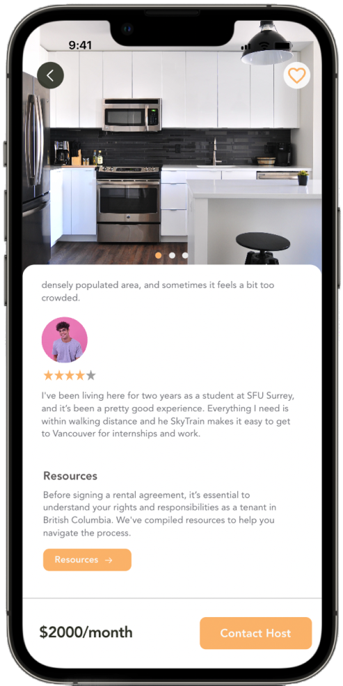
Five key screens showing the full user journey — from welcome and sign-in, through AI-powered recommendations, into listing detail with neighbourhood insights, and finally to the Contact Host screen.
Three live interaction demos from the prototype — showing the profile setup flow, neighbourhood insights on a listing, and peer reviews with BC renter resources.